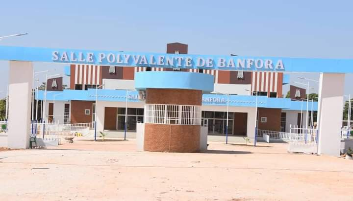

Salle Polyvalente de Banfora

La ville de Banfora a désormais sa « salle polyvalente ». Le président du Faso, Roch Marc Christian Kaboré a visité cette infrastructure ce jeudi dans la matinée.
Cette salle polyvalente de Banfora dispose de 1000 places assises et elle a coûté près d'un milliard de FCFA. Elle va servir entre autre de cadre pour des conférences et des activités culturelles